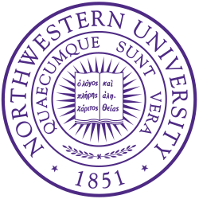
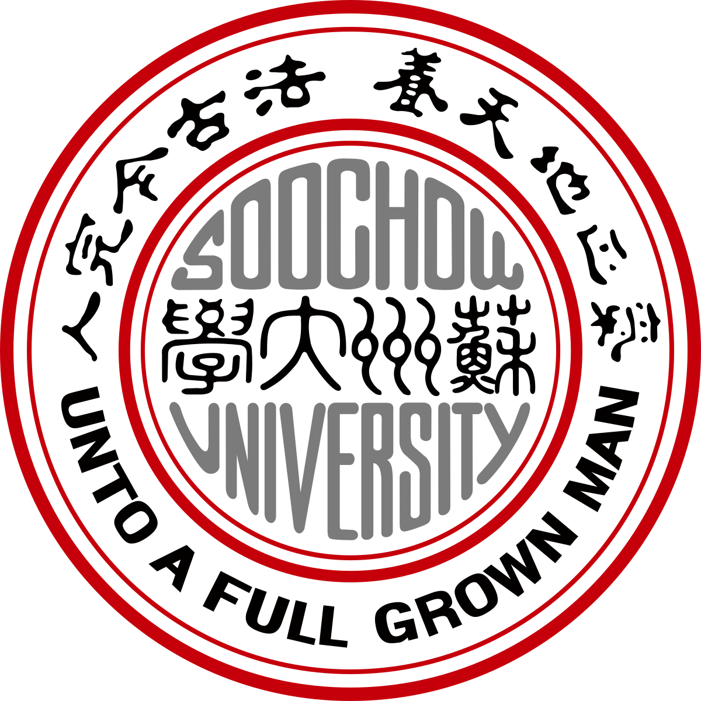

> HELLO, I'M> 你好，我是
Wenchang Wang王文长王文长Wenchang Wang
Ph.D. Student, Media, Technology & Society · Northwestern University美国西北大学 · 媒体、技术与社会（MTS）博士生
I study how people interact with online platforms — and how policy shifts and new tech like LLMs change that — with computational methods and causal inference. 我用计算方法和因果推断，研究人们如何与在线平台互动，以及政策变化和大语言模型等新技术如何改变这种互动。
Research研究议程
- 01How policy & technology changes reshape online behavior政策与技术变迁如何重塑线上行为
- 02How large language models are reshaping computational social science research大语言模型如何重塑计算社会科学研究
- 03Computational social science methods计算社会科学方法
News最新动态
- NOV 20262026.11 My paper with Zhuo Chen was accepted at Human Communication Research! Using billions of GitHub activity records, we study how Microsoft's acquisition announcement shocked the open-source community. 与陈灼老师合作的论文被 Human Communication Research 正式接收！文章利用数十亿条 GitHub 行为记录，研究了微软收购公告对开源社区带来的冲击。
- FALL 20262026 秋 Started my Ph.D. at Northwestern with Ágnes Horvát. 加入美国西北大学传播学院攻读博士，师从 Ágnes Horvát 副教授。
- JUN 20262026.06 Two papers at ICA 2026, incl. the Best Faculty Paper Award (ICCA). 两篇论文被 ICA 2026 录用，并获 ICCA 分部 Best Faculty Paper Award。
- 2026 Two posters at CSCW 2026 on how LLMs shape knowledge production. 在 CSCW 2026 展示两篇 poster，讨论大语言模型如何影响知识生产与合作。
Selected Papers代表性论文
Platform ownership change and user response
Wang, W. & Chen, Z. · Human Communication Research · Forthcoming即将刊出
When the Text Is Silent: Memory Shortcuts and the Validity of LLM Annotation under Evidence Insufficiency
Wang, W. & Song, Y. · arXiv
Do LLMs Read for Free? Auditing the Open Access Bias in AI-Mediated Science
Wang, W. & Song, Y. · CSCW Companion '26 · DOI
Education教育背景

Northwestern University美国西北大学
Ph.D., Media, Technology, and Society · Advisor: Ágnes Horvát媒体、技术与社会（MTS）博士 · 导师：Ágnes Horvát 副教授
Peking University北京大学
University of Cologne德国科隆大学
Exchange Student, Economics & Information Science经济学与信息科学交换生

Soochow University苏州大学
B.E., Mechanical & Electronic Engineering机械电子工程学士